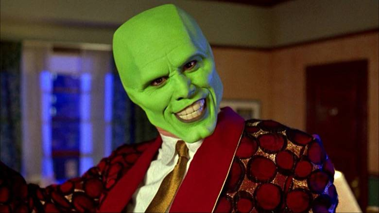
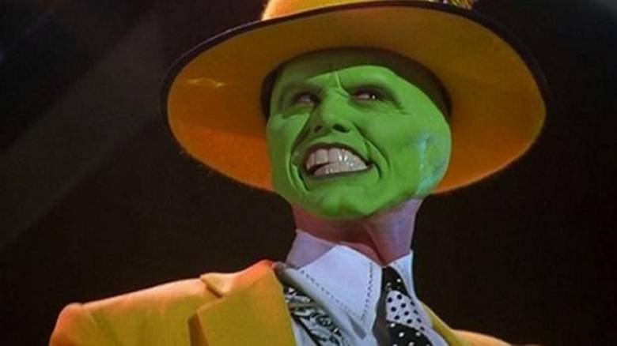
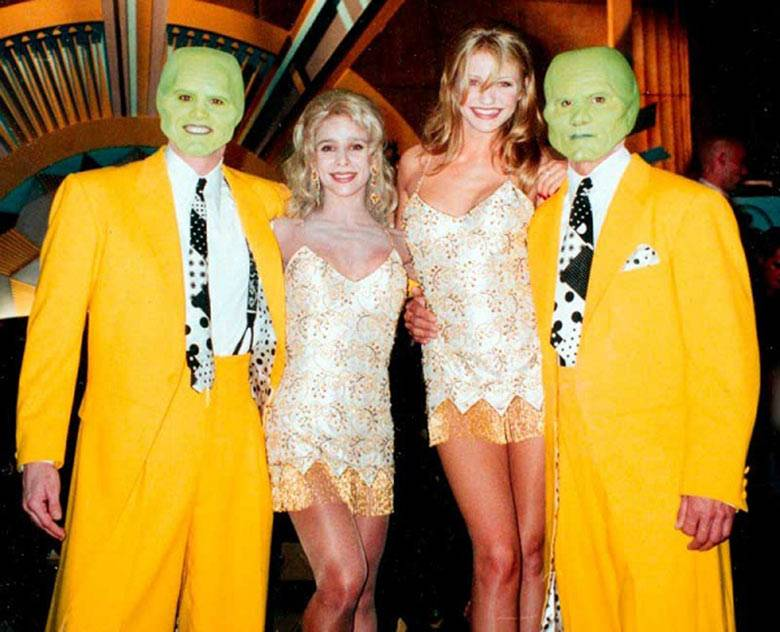
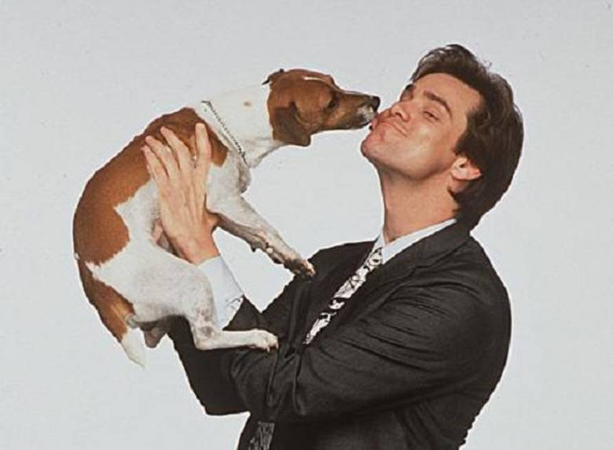
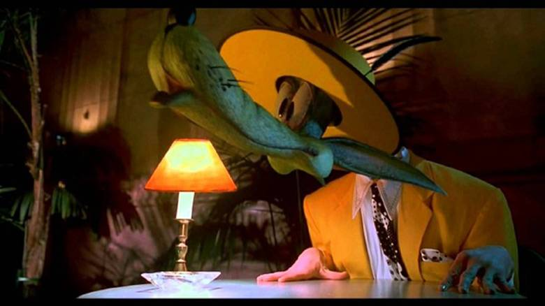
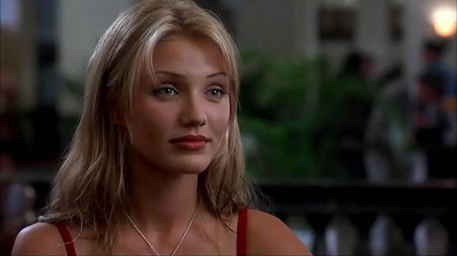

Маска (фільм, 1994)
«Маска» (англ. The Mask) — американський супергеройський комедійний фільм 1994 року, заснований на
серії коміксів, опублікованих Dark Horse Comics. Режисер — Чак Рассел, продюсери — Dark Horse Comics
і New Line Cinema, фільм випущений у кінотеатрах 29 липня 1994 року. Сюжет розгортається навколо
Стенлі Іпкіса (Джим Керрі), який знаходить маску Локі, що перетворює його на надлюдину Маску. Також
у фільмі взяли участь Пітер Грін у ролі мафіозного офіцера Доріана Тайрелла, Емі Ясбек у ролі
журналістки, Пітер Рігерт і Джим Даугхан — у ролях поліцейських детективів, Річард Джені — зіграв
друга Стенлі, Орест Матацена — власника нічного клубу і боса мафії Ніко, Бен Штейн — психолога,
Кемерон Діаз — дебютувала у ролі коханої Стенлі Тіни Карлайл.
Фільм посів місце у першій десятці найкасовіших свого року, закріпив репутацію Керрі як одного з
домінуючих комедійних акторів того часу. Останній був номінований на Золотий Глобус за роль, фільм —
на премію Американської кіноакадемії за найкращі візуальні ефекти, але програв Форресту Гампу.
За кадром: 12 цікавих фактів про фільм «Маска»
Напевно кожен з нас дивився цю комедію, яка стала класикою, а ось факти з нашої підбірки знають далеко
не всі.
29 липня 1994 року в прокат вийшов фільм «Маска» - одна з найяскравіших ролей Джима Керрі, дебют
Кемерон Діаз і революційні спецефекти.
Спочатку творці фільму планували знімати перетворення Стенлі Іпкіса за допомогою найтоншої гумової
маски. Однак Джиммі Керрі настільки вразив режисерів своєю мімікою, що маска не знадобилася. Актора
всього лише загримували зеленою фарбою.

Інша характерна особливість Маски - величезні зуби. Передбачалося, що пластикові протези знадобляться для
створення неповторного оскалу-посмішки Маски. Але Керрі умудрився розмовляти зі вставною щелепою, і в
підсумку глядачі споглядали жахливі зуби протягом усього фільму. До слова, після закінчення зйомок Керрі
забрав протези собі. Вставна щелепа знайшла гідне місце в будинку і нагадує акторові про його улюблений
фільм.

Зйомки танцю Тіни та маски, проходили кілька днів, причому як танцівники були запрошені учні балетної
студії. Актриса Камерон Діас хоча і мала гарну фізичну форму, але вважає ці знімальні дні найважчими за
свою довгу акторську кар'єру.

Тварин і дітей знімати найважче - це скаже будь-який режисер. Однак дресований джек-рассел-тер'єр Майло
не доставив кіношникам ніяких турбот. Після виходу картини «Маска» по всьому світу почалася поголовна
мода на цих милих собак.

Герой Джима Керрі у звичайному житті був схиблений на мультфільмах. Тому було прийнято рішення, що,
стаючи Маскою, герой буде зображувати різних мультиплікаційних персонажів. В результаті були обіграні
такі знамениті персонажі студії Warner Bros. як Таз, Багз Банні та Пепе Ле П'ю, а також Вовк з
мультфільмів Текса Евері, мультфільм з участю якого Стенлі дивиться по телевізору і чию поведінку він
уже в образі Маски копіює під час виступу Тіни.

Яскраво-жовтий костюм в який одягається герой Джима Керрі, був підготовлений костюмерами на прохання
актора. Так Джим хотів висловити шану своїй матері, яка зшила для нього схожий костюм для перших проб у
стендап.
Для Камерон Діас дана роль стала дебютною. На момент прем'єри фільму їй було всього 21 рік.

Режисер Чак Расселл заявив, що спочатку проект «Маска» починався як досить жорсткий фільм жахів на основі
однойменного коміксу (який мав рейтинг для дорослих і відрізнявся натуралістичним зображенням
насильства), однак згодом трансформувався в комедію, що стала бенефісом Джима Керрі.
У фільмі, Локі називають «богом зла», яким він все-таки не є. Проте, характер Локі переданий досить
вірно, двоїсту натуру цього трикстера відображають Стенлі (світла сторона) і його суперник (сторона
темна).
Після фільму Джим Керрі став одним із голлівудських зірок вже з восьмизначним гонораром. Важко було не
звернути уваги також на дебютантку Кемерон Діас в ролі Тіни Карлайл, співачки мюзик-холу і пособниці
гангстерів. Всупереч своєму чоловічому імені та іспанському прізвищу, виконавиця відповідала девізу
однієї з героїнь Мерилін Монро - «Джентльмени віддають перевагу блондинкам».
Слоган: «Був ніким - став героєм»
- Режисер: Чак Рассел
- Бюджет $ 23 000 000
- Збори в США: $ 119 938 730
- Збори у світі: + $ 231 644 677 = $ 351 583 407
Сюжет
Джим Керрі грає боязкого банківського службовця, життя якого змінюється, коли він знаходить стародавню
маску, що володіє магічною силою. Звичайна дерев'яна маска, яку Стенлі Іпкіс виловив з води міської
річки, надає цьому простому, невдалому банківському працівникові, якого топчуть всі і вся, надзвичайні
можливості. Вдягнувши її, він перетворюється на комічного супергероя, що абсолютно не зважає на закони
фізики та природи. За мить він зачаровує молоду білявку Тіну і руйнує плани її коханця — міського
кримінального авторитета.